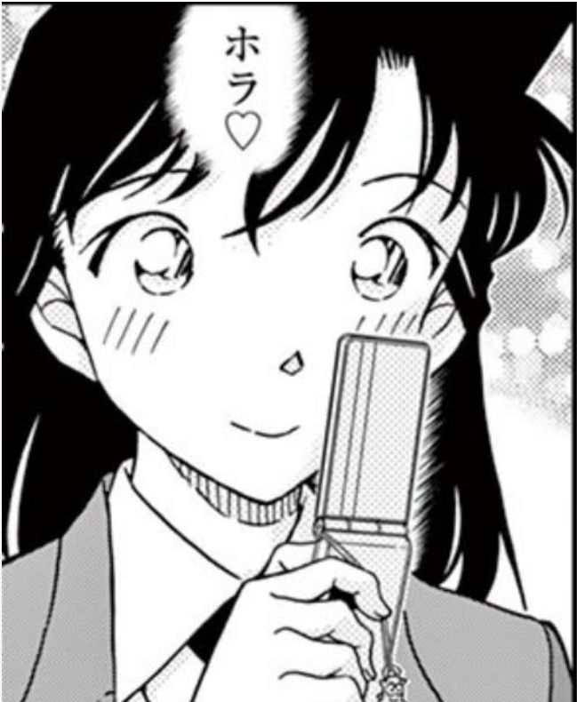
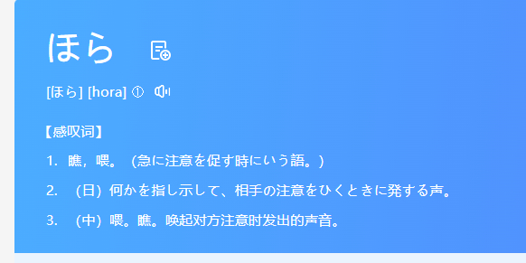
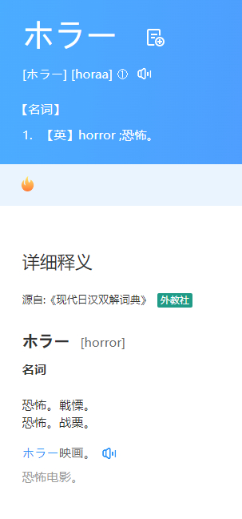
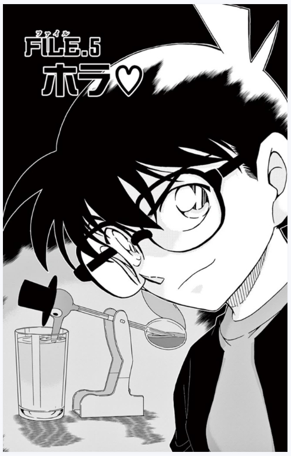
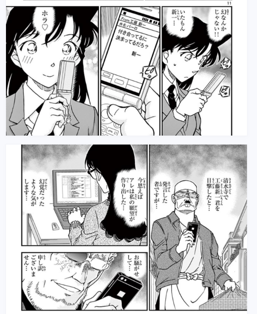

一个小发现，红修后寻找玛利亚的第三话解决篇。
就是饮水鸟“水下箭头变了”那话。
小兰在最后心理活动，新一才不是幻觉呢，拿出手机里的定情短信。
“看吧 ”
”
就是饮水鸟“水下箭头变了”那话。
小兰在最后心理活动，新一才不是幻觉呢，拿出手机里的定情短信。
“看吧
”

这个“喉啦”，中文翻译成“瞧” “看呐”。

不过青山这里写成平假名（可以理解为日文大写字母），除了表强调之外，还有这个意思。

2024-04-22 05:50 | 贴吧用户_01E859Q:恶意满满2024-04-22 07:36 | ☞坚硬如水☜:回复 贴吧用户_01E859Q :

这话的篇名就叫这个，也是带一个桃心，和小兰的台词一样。

所以，个人推测，这个“喉啦”有三个意思。
一个是表面上的，小兰拿起手机“看呐，这是我们确定关系的证明。”
第二个是这个寻找玛利亚故事里贯穿始终的，柯哀的感情，箭头变了，“读者们看呐，真正的情侣在这里。”
第三个是作者为未来故事设下的伏笔，也就是小兰的感情会引起严重的后果。也许是新一不得不假死，也许是朗姆篇结局的红黑对决。
因为这个“恐怖的爱”下一格就是朗姆。
”有三个意思。一个是表面上的，小兰拿起手机“看呐，这是我们确定关系的证明。”
第二个是这个寻找玛利亚故事里贯穿始终的，柯哀的感情，箭头变了，“读者们看呐，真正的情侣在这里。”
第三个是作者为未来故事设下的伏笔，也就是小兰的感情会引起严重的后果。也许是新一不得不假死，也许是朗姆篇结局的红黑对决。
因为这个“恐怖的爱”下一格就是朗姆。

让我们拭目以待吧，希望刚圣身体永远健康！2024-04-21 12:47 | 贴吧用户_7aQNKXM:高！2024-04-23 02:30 | ☞坚硬如水☜:回复 贴吧用户_7aQNKXM :个人推测


2024-04-25 02:59 | ☞坚硬如水☜:
我觉得这标题嘲讽意味比较浓
2024-04-26 03:07 | ☞坚硬如水☜:是的 明明是在说灰原2024-04-26 03:07 | ☞坚硬如水☜:而且新兰哪有什么正常的爱情啊
整個紅修篇都很怪味，搞了個天狗傳說，背景還是紅色黃昏，的確很像恐怖電影前的寧靜
2024-04-21 03:42 | 爱鸢尾的爱丽丝:就是拖啊拖的节奏慢的像某些无病呻吟令人昏昏欲睡的文艺片。就要恐怖片，来点强刺激，不然我快坚持不住再次弃坑了2024-04-21 03:55 | 世界上没有真理:回复 爱鸢尾的爱丽丝 :肯定拖，我猜沒那麼快，至少也要鋪墊什麼的，最快明年下半年（這還是最樂觀的想法了）最慢就看青山心情，反正名柯票房又大賣了，小學館就等著這部ip給他們賺錢，當然能拖就拖

2024-04-21 20:49 | CA就多恋💝:+3
不懂日语，只是简单搜索了一下。感觉日语在表达“瞧、看这里”时，常用「ほら」而不是「ホラ」。「ホラ」本身的意思是“洞，孔，窟窿，虚空 / 内部变空的地方”，与「ほら」相同的意思是“法螺：大话、牛皮”
2024-04-22 04:49 | ◎洛洛白◎:洞的日语发音不是哈娜，hana吗？
期待假死
2024-04-21 13:29 | feather034:期待黑化
问题是她和新一确认交往，而其他人都在掩盖新一的出现。这……但凡正常点的女主角或青梅都会表现出担忧：XXX，你遇到了什么危险吗？
2024-04-21 13:33 | lilac🌟:兰姐一直都只最爱自己，以满足自己为优先2024-04-22 12:29 | ✨浮光掠影:很奇怪2024-04-25 13:43 | 176******25725🔅:她一点都不好奇吗？放别的电影里就像被下蛊了。。。
而且都在传新一死掉了，她也不问问为什么吗

lz天才
高手
这里最地狱的是其他人都在用智能机，只有小兰拿着翻盖机，甚至柯哀之间还在视频，我一个柯哀党都觉得小兰惨
2024-04-22 01:00 | 贴吧用户_JSE5G3A:每当你为她感到可怜的时候，想想她底下的那群神金就不同请了2024-04-25 13:44 | 176******25725🔅:回复 叶慕容 :不需要你同情她，别说戏外了，戏内她干的那些事也不需要同情2024-04-25 17:24 | 依人涉水:每次玩想可怜兰姐，一想到兰姐漫画里的窒息操作，就烟消云散了

我去，高手


个人感觉这个地方这么理解有些牵强，大概率只是普通的语气词
2024-04-21 13:32 | 却不若是:日本那边后者不是常用词，更像是“窟窿”的意思，但是青山两次强调都用它，不能说不是一种特别的用意了2024-04-21 22:32 | 林夕劫掠队长💕:回复 却不若是 :日本那边使用片假名的潜在规则中有一条就是表着重强调，在漫画这里用片假名表示∠兴奋高兴的语气也是有层主说的可能的2024-04-22 12:39 | 平者深黑:回复 却不若是 :片假名的ホラ在柯南漫画里出现了一千多次，这就是常用词2024-04-22 12:45 | 却不若是:回复 平者深黑 :你居然数了？？!2024-04-22 12:57 | 平者深黑:回复 却不若是 :我把漫画文字做了自动识别，然后全文检索的，1-104卷里找到1348个ホラ，其中有34个ホラー（迅速过了一眼，34个ホラー里大概有24个表示恐怖，剩下10个表示“看”）。1314个ホラ里绝大多数表示“看”。另外ほら有130个，其实在漫画里ほら才是少数2024-04-24 13:36 | 却不若是:回复 平者深黑 :严谨的，确实这个分析有些漏洞，回看漫画，很多人也用过这个表述，并不是小兰的专属，所以应该只是凑巧了
不这么解释这格看着也挺毛骨悚然的，73应该是懂得如何刻画女性的可爱之处的，可是这幕sr的情侣却是隐约透露着病态化的，那个爱心意义不明，我认为用感叹号都比用爱心更能表现积极的语气，用爱心说实话有些戏谑的意思
2024-04-22 12:31 | ✨浮光掠影:因为底层是建立在隐瞒上的。怎么写都会怪。
还有高手
这个角度感觉有意思
还有高手
是时候安排满月平次的类似剧情了 没错，目前人前活跃的全是新一的堂弟快斗。亲爱的堂弟为了确认堂兄到底是否失踪，多次扮演他想钓他出来。结果一直没有
没错，目前人前活跃的全是新一的堂弟快斗。亲爱的堂弟为了确认堂兄到底是否失踪，多次扮演他想钓他出来。结果一直没有
没错，目前人前活跃的全是新一的堂弟快斗。亲爱的堂弟为了确认堂兄到底是否失踪，多次扮演他想钓他出来。结果一直没有这也是一个伏笔，厨子诈两下她就得拿出短信证明了